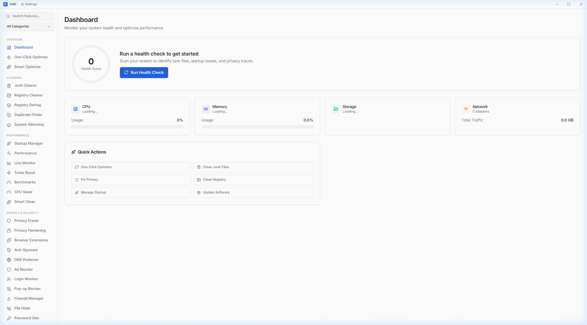
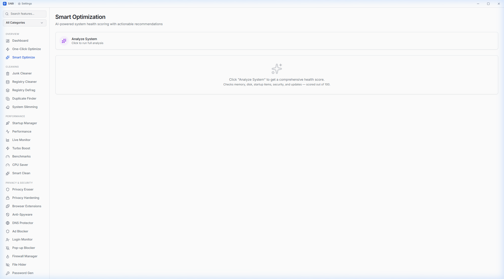
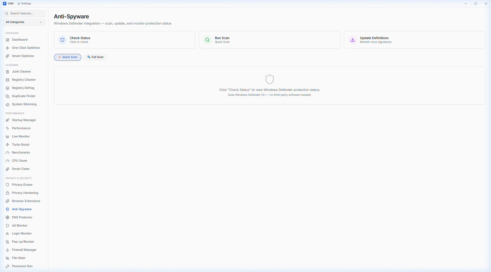
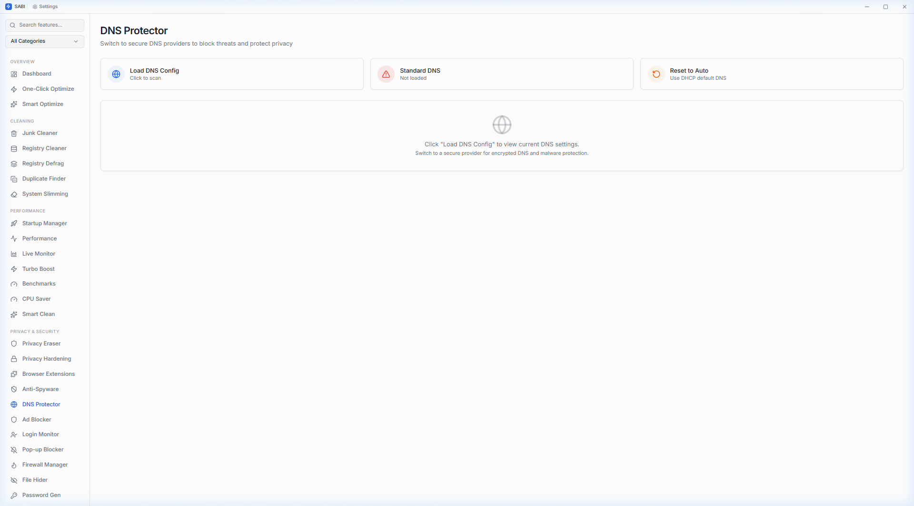
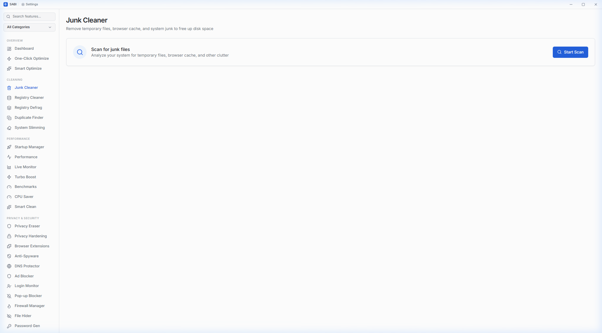

46 system tools packed into a ~3 MB application. Built with Rust + React.
No Electron. No bloat. No telemetry. 100% local.
Real screenshots from the application — what you see is what you get.





Every feature is free and fully functional — no "Pro" version needed.
System health overview with CPU, RAM, disk, and network metrics
Run all cleaners and optimizers in a single click
AI-powered health score (0-100) across 5 categories with recommendations
Temp files, browser cache, system logs, Windows Update cache
Orphaned COM entries, broken associations, empty keys with auto-backup
Hive-level fragmentation analysis with compaction metrics
SHA-256 hash-based detection with partial hashing for large files
Remove unnecessary Windows bloat components
Boot time analysis, program control, context menu manager
Real-time CPU and RAM with optimization action log
Continuous dashboard with real-time history graphs
One-click mode — stops non-essential services, optimizes priorities
CPU, disk, and memory benchmark suite with scores
Detect and manage CPU-hungry background processes
Intelligent cleaning with category-based junk analysis
Chrome, Edge, Firefox data — history, cookies, cache, tracking
Windows telemetry & privacy toggles
Scan extensions across Chrome, Edge, and Firefox
Windows Defender — status check, quick/full scan, definition updates
8 secure DNS providers — Cloudflare, Quad9, AdGuard, etc.
System-level hosts-file blocking — ads, trackers, telemetry, malware
Windows Security Event Log — success/failed logins, logon types
Suppress intrusive Windows notifications
View, toggle, and create Windows firewall rules
AES-256-GCM encryption with password-based file locking
Cryptographic CSPRNG — OS-level secure random generation
Update detection via winget with silent install
PnP hardware driver scanning via WMI with categorization
Deep uninstall with registry leftover scanning
Remove pre-installed bloatware — fully reversible
Performance and UI optimization toggles
Start, stop, and disable Windows services
Microsoft Edge policy control and management
Windows Update pause/history with KB descriptions
User profile scanner with disk usage and last login
Visual disk usage with WinDirStat-style tree view
Analyze and defragment drives for faster access
Secure multi-pass deletion (DoD 5220.22-M)
Split and join large files across storage media
S.M.A.R.T. diagnostics — temperature, hours, wear level
Recursive scan with size threshold and path display
Detect and clean empty directory trees system-wide
Application-specific leftover scanner after uninstall
Recycle Bin browser — restore individual files or empty all
OneDrive, Dropbox, Google Drive, iCloud cache cleaner
DNS optimization with live active indicator
Real-time bandwidth upload/download graphs
Active TCP/UDP connections with process names and ports
Add, edit, remove entries — block telemetry domains
Ping, download, upload testing with visual results
Hardware & software inventory — OS, CPU, GPU, RAM, BIOS
Automated cleanup at set intervals
Create and manage system restore points
ISO 27001 compliance audit report — TXT/CSV export
Detailed feature-by-feature comparison with popular PC optimizers.
| Feature | SABI | CCleaner Pro | IObit ASC | Glary Utilities | Wise Care 365 |
|---|---|---|---|---|---|
| Price | Free (MIT) | $30/yr | $17/yr | $20/yr | $30/yr |
| Open Source | ✓ | ✗ | ✗ | ✗ | ✗ |
| Telemetry | None | Yes | Yes | Yes | Yes |
| Installer Size | ~3 MB | ~35 MB | ~50 MB | ~25 MB | ~20 MB |
| RAM Usage (Idle) | ~40 MB | ~120 MB | ~180 MB | ~90 MB | ~100 MB |
| Total Tools | 46 | ~12 | ~20 | ~18 | ~15 |
| Junk Cleaner | ✓ | ✓ | ✓ | ✓ | ✓ |
| Registry Cleaner | ✓ + Auto-backup | ✓ | ✓ | ✓ | ✓ |
| Duplicate Finder | ✓ SHA-256 | Pro only | ✓ | ✓ | ✗ |
| Startup Manager | ✓ + Boot Time | ✓ | ✓ | ✓ | ✓ |
| Real-time Monitor | ✓ Live Graphs | ✗ | Toolbar | ✗ | ✗ |
| Software Updater | ✓ winget | Pro only | ✓ | ✓ | ✗ |
| Driver Updater | ✓ | ✗ | Pro only | ✗ | ✗ |
| File Encryption | ✓ AES-256-GCM | ✗ | ✗ | File encryption | ✗ |
| Anti-Spyware | ✓ Defender CLI | ✗ | Bundled AV | ✗ | ✗ |
| DNS Protection | ✓ 8 providers | ✗ | ✗ | ✗ | ✗ |
| Ad Blocker | ✓ Hosts-file | Plugin | ✗ | ✗ | ✗ |
| Login Monitor | ✓ Event Log | ✗ | ✗ | ✗ | ✗ |
| Password Generator | ✓ CSPRNG | ✗ | ✗ | ✗ | ✗ |
| Windows Debloater | ✓ | ✗ | ✗ | ✗ | ✗ |
| S.M.A.R.T. Health | ✓ | ✗ | ✗ | ✓ | ✗ |
| File Recovery | ✓ Recycle Bin | Pro only | ✗ | File undelete | ✗ |
| Cloud Cache Clean | ✓ 4 services | ✗ | ✗ | ✗ | ✗ |
| ISO 27001 Audit | ✓ | ✗ | ✗ | ✗ | ✗ |
| Smart AI Score | ✓ 0-100 | ✗ | Score | ✗ | Score |
| File Shredder | ✓ DoD spec | Pro only | ✓ | ✓ | ✓ |
| Benchmarks | ✓ CPU/Disk/RAM | ✗ | ✗ | ✗ | ✗ |
| Built with Rust | ✓ Native | C++ | C++ | C++ | C++ |
SABI is open-source. Audit the code yourself.
Military-grade authenticated encryption for File Hider
All system commands sanitized against injection attacks
No data leaves your machine. No analytics. No tracking.
Cloud cleaner and DNS only operate on approved targets
Registry and hosts file backed up before every modification
Tauri v2 capabilities — explicit permission grants only
Free, open-source, no account needed.